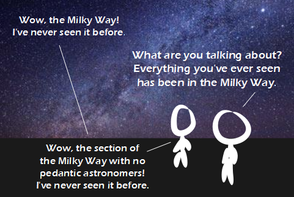

Comic JK 929
When I Feel Like It
⇤
<
?
>
⇥

⇤
<
?
>
⇥
Forum
.
RSS
.
Digg
.
Facebook
.
Reddit
.
Twitter
.
Stumbleupon
Enter your thoughts on number 929 here. Please, no spamming, trolling, phreaking, or pedantic astronomy. Best one in some time!!! >A greed. "everything" ? what about Andromeda... and the Magellanic Clouds... ? > He'd never seen Andromeda... that's light pollution for you... >> You can totally see Andromeda with the naked eye. >>>Yeah, but not in a city >>>>The Magellanic Clouds are obscured as well if you're anywhere urban. >>A long time ago I saw Andromeda and I could even make out the spiral shape. Too bad my eyes got much worse since then. That's why I usually take both contact lenses and glasses when planing to look at stars. Also, seeing a pathetically small part of something doesn't count as seeing the thing itself. > This is why people post penis shots on Craigslist and preserve their anonymity. >> ALL OF THE DAY BRO > So nobody has ever seen your anus?